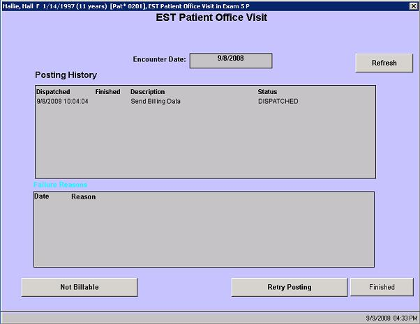

| Solution: |
In this solution...
|
| Details: |
Description Access this screen by selecting Retry Posting from the menu that appears when you select a patient name bar from the Checkout room. Screen Elements 
Want to Learn More?
Related Education Opportunities |
| Symptoms: |
| ID: 040817019131775 | Last Modified: 01/29/2009 04:14:01 PM |